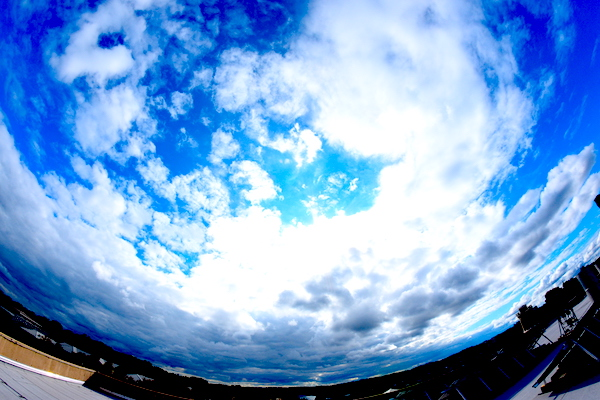
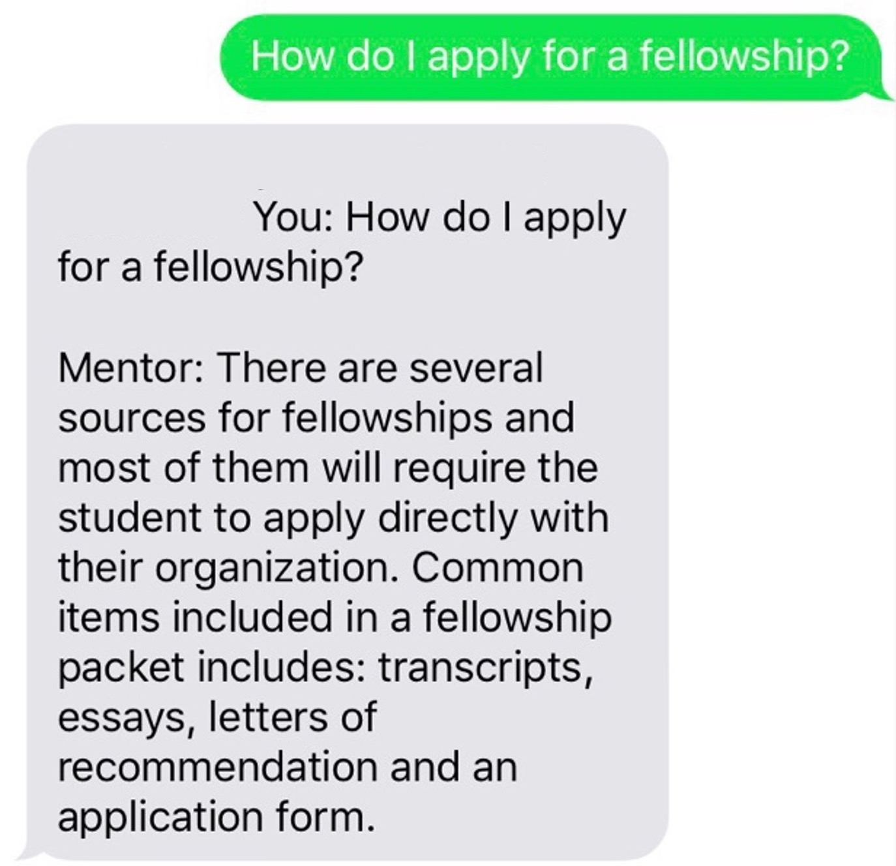

I interned at Samsung Research in 2023 as a Computer Vision Research Intern. I also interned at Idaho National
Laboratory in 2019 as a Data Sciene Intern. I am also a honored to be funded by the GEM and Fritsch Family Fellowship during my PhD studies.
My interest broadly lies within the intersection of Computer Vision and Machine/Deep Learning.
My Phd Thesis used vision and learning to lessen the variability of photovoltaic systems by studying the spatial distribution of clouds and their absorption properties
along with the physical process that governs the creation and extinction of them. All in an effort to make photovoltaic systems more widespread and efficient by forecasting its availability long into the future.
Publications

Precise Forecasting of Sky Images Using Spatial Warping Leron Julian, Aswin Sankaranarayanan
International Conference On Computer Vision Workshop (ICCVW), 2021
[Paper] [Supp] [Bibtex] [Code]
We introduce a deep learning framework, along with an optimal warping algorithm, to predict a future sky image frame with higher spatial and longer temporal resolution than previous methods.
Precise Forecasting of Sky Images Using Spatial Warping Leron Julian, Aswin Sankaranarayanan
International Conference On Computer Vision Workshop (ICCVW), 2021
[Paper] [Supp] [Bibtex] [Code]
We introduce a deep learning framework, along with an optimal warping algorithm, to predict a future sky image frame with higher spatial and longer temporal resolution than previous methods.
The Development Of A Conversational Agent Mentor Interface Using Short Message Service (SMS) Leron Julian,
Kinnis Gosha
Earl W. Huff Jr.
ACM SIGMIS Conference on Computers and People Research (SIGMIS-CPR) , 2018
[Paper]
We present the design and development of a conversational agent mentor that uses short message service (SMS) as a virtual mentor, to mentor undergraduate computer science majors at a Historically Black College (HBCU)
who are considering pursuing a graduate degree in computing.

Using SMS As An Interface For A Virtual Mentoring System Leron Julian,
Kinis Gosha
Association for Computing Machinery Southeast (ACMSE), 2018
[Poster]
Poster presenting the design and development of a conversational agent mentor that uses short message service (SMS) as a virtual mentor, to mentor undergraduate computer science majors at a Historically Black College (HBCU)
who are considering pursuing a graduate degree in computing.
Projects
Dynamic Graphs For Point Cloud Completion
Project for 16-852 Learning for 3D Vision @ CMU, Spring 2022